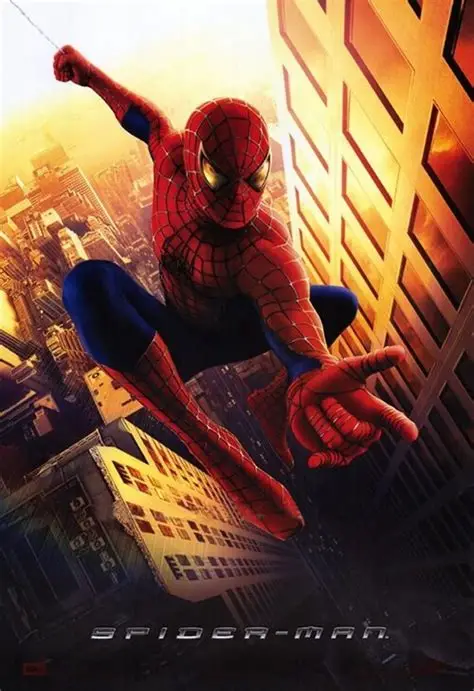

Durante una excursión escolar, Peter es mordido por una araña genéticamente modificada, lo que le otorga fuerza, agilidad, la capacidad de adherirse a las paredes y un "sentido arácnido". Inicialmente usa estos nuevos poderes para fines egoístas, pero tras la trágica muerte de su amado Tío Ben a manos de un ladrón que él no detuvo, Peter aprende la lección: "Un gran poder conlleva una gran responsabilidad". A partir de ese momento, se convierte en el justiciero enmascarado Spider-Man. Su primera gran amenaza es el Duende Verde (Willem Dafoe), la versión desquiciada y súper poderosa de Norman Osborn, el padre del mejor amigo de Peter, Harry. La película narra el origen de Spider-Man, su lucha por equilibrar su vida de héroe con sus sentimientos por Mary Jane, y su primer y dramático enfrentamiento contra el Duende Verde.